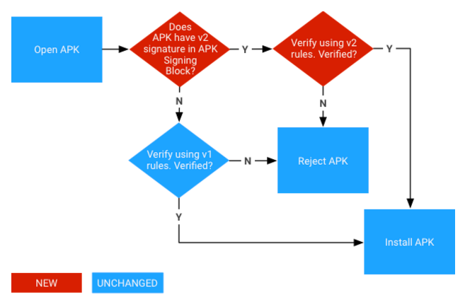

Android 9 supports APK key rotation, which gives apps the ability to change their signing key as part of an APK update. To make rotation practical, APKs must indicate levels of trust between the new and old signing key. To support key rotation, we updated the APK signature scheme from v2 to v3 to allow the new and old keys to be used. V3 adds information about the supported SDK versions and a proof-of-rotation struct to the APK signing block.
To maintain backward-compatibility with the v1 APK format, v2 and v3 APK signatures are stored inside an APK Signing Block, located immediately before the ZIP Central Directory.
The v3 APK Signing Block format is the same as v2. The v3 signature of the APK is stored as an ID-value pair with ID 0xf05368c0.
The v3 scheme is designed to be very similar to the v2 scheme. It has the same general format and supports the same signature algorithm IDs, key sizes, and EC curves.
However, the v3 scheme adds information about the supported SDK versions and the proof-of-rotation struct.
APK Signature Scheme v3 Block is stored inside the APK Signing Block under ID
0xf05368c0.
The format of the APK Signature Scheme v3 Block follows that of v2:
signer:
signed data:
digests:
signature algorithm ID (4 bytes)digest (length-prefixed)certificates:
certificate (ASN.1 DER form)minSDK (uint32) - this signer should be ignored if
platform version is below this number.maxSDK (uint32) - this signer should be ignored if
platform version is above this number.additional
attributes:
ID (uint32)value (variable-length: length of the additional
attribute - 4 bytes)ID - 0x3ba06f8cvalue - Proof-of-rotation structminSDK (uint32) - duplicate of minSDK value in signed data
section - used to skip verification of this signature if the current platform is
not in range. Must match signed data value.maxSDK (uint32) - duplicate of the maxSDK value in the signed
data section - used to skip verification of this signature if the current
platform is not in range. Must match signed data value.signatures:
signature algorithm ID (uint32)signature over signed datapublic key (SubjectPublicKeyInfo, ASN.1 DER
form)The proof-of rotation struct allows apps to rotate their signing cert without being blocked on other apps with which they communicate. To accomplish this, app signatures contain two new pieces of data:
The proof-of-rotation attribute in the signed-data section consists of a singly-linked list, with each node containing a signing certificate used to sign previous versions of the app. This attribute is meant to contain the conceptual proof-of-rotation and self-trusted-old-certs data structures. The list is ordered by version with the oldest signing cert corresponding to the root node. The proof-of-rotation data structure is built by having the cert in each node sign the next in the list, and thus imbuing each new key with evidence that it should be as trusted as the older key(s).
The self-trusted-old-certs data structure is constructed by adding flags to each
node indicating its membership, and properties, in the set. For example, a flag
may be present indicating that the signing certificate at a given node is
trusted for obtaining Android signature permissions, so that other apps which
are signed by it still may be granted that permission, even though they are now
behind the defining app. Because the whole proof-of-rotation attribute resides
in the signed data section of the v3 signer field, it is protected
by the key used to sign the containing apk.
This format precludes multiple signing keys and convergence of different ancestor signing certificates to one (multiple starting nodes to a common sink).
The proof-of-rotation is stored inside the APK Signature Scheme v3 Block under
ID 0x3ba06f8c. Its format is:
levels:
signed data (by previous cert - if exists)
certificate (ASN.1 DER form)signature algorithm ID (uint32) - algorithm used by cert in
previous levelflags (uint32) - flags indicating whether or not this cert
should be in the self-trusted-old-certs struct, and for which operations.signature algorithm ID (uint32) - must match the one from the
signed data section in the next level.signature over the above signed
dataAndroid currently treats an APK signed with multiple certificates as having a unique signing identity separate from the comprising certs. Thus, the proof-of-rotation attribute in the signed-data section forms a directed acyclic graph, that could better be viewed as a singly-linked list, with each set of signers for a given version representing one node. This adds extra complexity to the proof-of-rotation struct (multi-signer version below). In particular, ordering becomes a concern. What's more, it is no longer possible to sign APKs independently, because the proof-of-rotation structure must have the old signing certs signing the new set of certs, rather than signing them one-by-one. For example, an APK signed by key A that wishes to be signed by two new keys B and C could not have the B signer just include a signature by A of B, because that is a different signing identity than B and C. This would mean that the signers must coordinate before building up such a struct.
sets:
signed data (by previous set - if exists)
certificates
certificate (ASN.1 DER form)signature algorithm IDs (uint32) - one for each
certificate from the previous set, in the same order.flags (uint32) - flags indicating whether or not this set of
certs should be in the self-trusted-old-certs struct, and for which
operations.signatures:
signature algorithm ID (uint32) - must match the one from the
signed data sectionsignature over the above
signed datav3 scheme also doesn't handle two different keys rotating to the same signing key for the same app. This differs from the case of an acquisition, where the acquiring company would like to move the acquired app to use its signing key to share permissions. The acquisition is viewed as a supported use-case because the new app would be distinguished by its package name and could contain its own proof-of-rotation struct. The unsupported case, of the same app having two different paths to get to the same cert, breaks a lot of the assumptions made in the key rotation design.
In Android 9 and higher, APKs can be verified according to the APK Signature Scheme v3, v2 scheme, or v1 scheme. Older platforms ignore v3 signatures and try to verify v2 signatures, then v1.

Figure 1. APK signature verification process
signer in the APK Signature Scheme v3 Block with a min
and max SDK version that is in range of the current platform:
signature algorithm ID from
signatures. The strength ordering is up to each
implementation/platform version.signature from
signatures against signed data using public
key. (It is now safe to parse signed data.)signer.digests and signatures is identical. (This is
to prevent signature stripping/addition.)digest from digests.certificate of
certificates is identical to public key.signer verify
that the struct is valid and this signer is the last
certificate in the list.signer was found in range
of the current platform and step 3 succeeded for that signer.
To test that your device supports v3 properly, run the
PkgInstallSignatureVerificationTest.java CTS tests in
cts/hostsidetests/appsecurity/src/android/appsecurity/cts/.